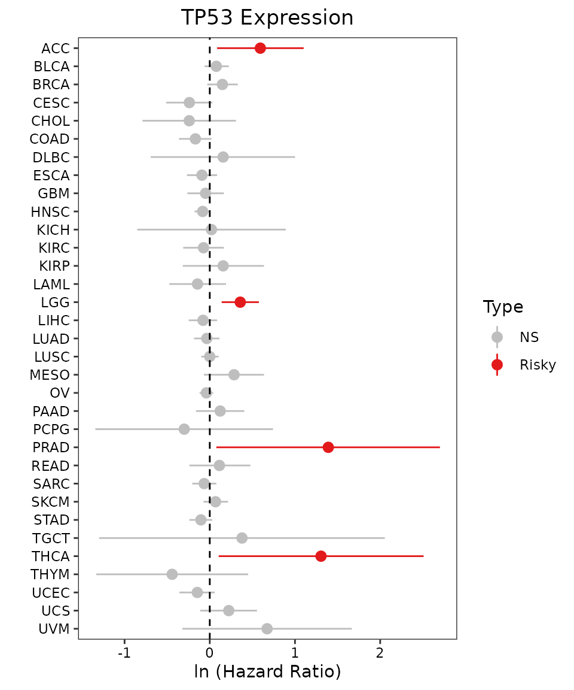

Examples of Accessible Functions
Shixiang Wang, Yi Xiong, Longfei Zhao, Kai Gu, Yin Li, Fei Zhao
2024-03-11
Source:vignettes/api.Rmd
api.RmdFirstly, assume you have already installed UCSCXenaShiny package.
library(UCSCXenaShiny)
#> =========================================================================================
#> UCSCXenaShiny version 2.0.0
#> Project URL: https://github.com/openbiox/UCSCXenaShiny
#> Usages: https://openbiox.github.io/UCSCXenaShiny/
#>
#> If you use it in published research, please cite:
#> Shixiang Wang, Yi Xiong, Longfei Zhao, Kai Gu, Yin Li, Fei Zhao, Jianfeng Li,
#> Mingjie Wang, Haitao Wang, Ziyu Tao, Tao Wu, Yichao Zheng, Xuejun Li, Xue-Song Liu,
#> UCSCXenaShiny: An R/CRAN Package for Interactive Analysis of UCSC Xena Data,
#> Bioinformatics, 2021;, btab561, https://doi.org/10.1093/bioinformatics/btab561.
#> =========================================================================================
#> --Enjoy it--Fetch Data
We provide function to retrieve multi-dimensional data including genomic, epigenomic, transcriptomic, and proteomic data from TCGA (note, this actually contains data from TCGA/TARGET/GTEx databases) and CCLE Pan-Cancer dataset for single identifier (e.g., gene, protein).
Check parameters:
args(query_pancan_value)
#> function (molecule, data_type = c("mRNA", "transcript", "protein",
#> "mutation", "cnv", "methylation", "miRNA", "fusion", "promoter",
#> "APOBEC"), database = c("toil", "ccle", "pcawg"), reset_id = NULL,
#> opt_pancan = .opt_pancan)
#> NULLFor TCGA gene expression data, we use Xena dataset with ID
TcgaTargetGtex_rsem_gene_tpm which includes 19131 samples
with tumor tissue samples and normal tissue samples. The expression
value unit is log2(tpm+0.001).
Let’s check several examples.
Fetch Gene Expression
gene_expr <- query_pancan_value("TP53")
#> =========================================================================================
#> UCSCXenaTools version 1.4.8
#> Project URL: https://github.com/ropensci/UCSCXenaTools
#> Usages: https://cran.r-project.org/web/packages/UCSCXenaTools/vignettes/USCSXenaTools.html
#>
#> If you use it in published research, please cite:
#> Wang et al., (2019). The UCSCXenaTools R package: a toolkit for accessing genomics data
#> from UCSC Xena platform, from cancer multi-omics to single-cell RNA-seq.
#> Journal of Open Source Software, 4(40), 1627, https://doi.org/10.21105/joss.01627
#> =========================================================================================
#> --Enjoy it--
#> Try querying data #1
#> -> Checking if the dataset has probeMap...
#> -> Done. ProbeMap is found.
#> Saving data to file /tmp/Rtmp96m644/UCSCXenaShiny/4822f991b17cbdab3831c455be7620b2.rds
#> More info about dataset please run following commands:
#> library(UCSCXenaTools)
#> XenaGenerate(subset = XenaDatasets == "TcgaTargetGtex_rsem_gene_tpm") %>% XenaBrowse()
str(gene_expr)
#> List of 2
#> $ expression: Named num [1:19131] 4.79 5.89 5.52 4.43 2.38 ...
#> ..- attr(*, "names")= chr [1:19131] "GTEX-S4Q7-0003-SM-3NM8M" "TCGA-19-1787-01" "TCGA-S9-A7J2-01" "GTEX-QV31-1626-SM-2S1QC" ...
#> ..- attr(*, "label")= chr "gene expression RNAseq"
#> $ unit : chr "log2(tpm+0.001)"Fetch Transcript Expression
transcript_expr <- query_pancan_value("ENST00000000233", data_type = "transcript")Fetch Gene CNV
gene_cnv <- query_pancan_value("TP53", data_type = "cnv")Fetch Gene Mutation
gene_mut <- query_pancan_value("TP53", data_type = "mutation")Fetch miRNA mature strand expression
miRNA_expr <- query_pancan_value("hsa-let-7a-2-3p", data_type = "miRNA")Data Visualization
Visualize Single Gene Expression in PANCAN Dataset
vis_toil_TvsN(Gene = "TP53", Mode = "Violinplot", Show.P.value = FALSE, Show.P.label = FALSE)
#> Reading cache data /tmp/Rtmp96m644/UCSCXenaShiny/4822f991b17cbdab3831c455be7620b2.rds
#> More info about dataset please run following commands:
#> library(UCSCXenaTools)
#> XenaGenerate(subset = XenaDatasets == "TcgaTargetGtex_rsem_gene_tpm") %>% XenaBrowse()
Compare Gene Expression Level in Single Cancer Type
vis_toil_TvsN_cancer(
Gene = "TP53",
Mode = "Violinplot",
Show.P.value = TRUE,
Show.P.label = TRUE,
Method = "wilcox.test",
values = c("#DF2020", "#DDDF21"),
TCGA.only = FALSE,
Cancer = "ACC"
)
#> Reading cache data /tmp/Rtmp96m644/UCSCXenaShiny/4822f991b17cbdab3831c455be7620b2.rds
#> More info about dataset please run following commands:
#> library(UCSCXenaTools)
#> XenaGenerate(subset = XenaDatasets == "TcgaTargetGtex_rsem_gene_tpm") %>% XenaBrowse()
#> Counting P value
#> Counting P value finished
Compare Gene Expression Level in Different Anatomic Regions
This function needs gganatogram package, which is not on CRAN. Please install it before using this function.
if (require("gganatogram")) {
vis_pancan_anatomy(Gene = "TP53", Gender = c("Female", "Male"), option = "D")
}{kind=link}
Visualize Relationship between Gene Expression and Prognosis in the PANCAN Dataset
vis_unicox_tree(
Gene = "TP53",
measure = "OS",
threshold = 0.5,
values = c("grey", "#E31A1C", "#377DB8")
)
#> Reading cache data /tmp/Rtmp96m644/UCSCXenaShiny/4822f991b17cbdab3831c455be7620b2.rds
#> More info about dataset please run following commands:
#> library(UCSCXenaTools)
#> XenaGenerate(subset = XenaDatasets == "TcgaTargetGtex_rsem_gene_tpm") %>% XenaBrowse()
#> Get data value for TP53
Other Functions and Data
All exported data and functions are organized at here.